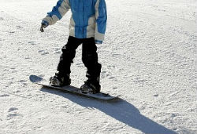
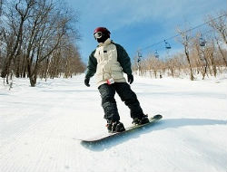
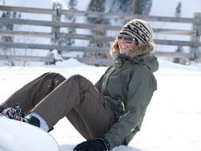

Сноубординг – это красивый, увлекательный и молодежный спорт.
Но, как и всякий вид спорта, он требует некоторой подготовки. Скольжение на доске по склону – не совсем обычное состояние для человеческого тела.
Во время катания напрягаются все мышцы вашего тела. Встав на доску в первый раз, вы, скорее всего, даже не поймете, как на этом вообще можно ехать.
Итак, если у вас есть свой сноуборд с креплениями и ботинками, то надевайте их и вставайте на доску на полу в своем доме. Это очень важный момент – почувствуйте, как сидят на вас ботинки, не жмут ли или, наоборот, не велики ли. Обратите внимание, что ботинки должны быть зашнурованы плотно, чтобы нога не болталась в голенище. Но не переусердствуйте – если вы затянете шнуровку слишком сильно, ноги очень быстро устанут и начнут болеть. Постарайтесь понять, в каком положении находится ваше тело. Если вам удобно, поделайте небольшие раскачивания вперед-назад, попробуйте слегка присесть. Cтоит учесть еще один важный момент – определение ведущей ноги. Обычно сноубордисты всегда «рулят» только одной ногой, вторая – помогает. Понять, как будет удобнее вам, очень просто: попросите кого-нибудь легонько толкнуть вас в грудь. Вы сделаете шаг назад, и та нога, на которую вы обопретесь, скорее всего, и есть ведущая. Зачем это делать? Дома куда проще отрегулировать крепления именно под вас.
 С этого начинают учиться кататься абсолютно все сноубордисты. Просто пристегнитесь к доске на ровном участке и попробуйте встать – вполне возможно, что в первый раз это будет непросто. Поймайте равновесие, почувствуйте вес доски, покрутитесь, подпрыгните на месте. Пораскачивайтесь на снегу вперед-назад так же, как вы это делали дома. Теперь вам нужно найти участок горы с небольшим уклоном. Пристегнитесь и встаньте, вес тела перенесите на пятки, а доску немного вдавите задним кантом в склон. Очень важно на этом этапе прочувствовать баланс. Как только вы почувствуете себя уверенно, можете начать скользить вниз по склону. Для этого нужно легонько надавить носками на передний кант. Делайте все плавно и медленно, колени слегка согните, а руки выставьте вперед. Чтобы доска равномерно скользила вперед на заднем канте, держите кант ровно – не откидывайтесь сильно назад и не наклоняйтесь вперед. Важно найти золотую середину. Если вы чувствуете, что скорость возрастает, нагрузите задний кант сильнее – таким образом вы сбросите скорость или остановитесь. Ваша задача на этом этапе – плавно ехать вниз по склону только на заднем канте, уверенно регулировать скорость и тормозить. Когда вы поймете, что это уже дается вам легко, самое время переходить к третьему шагу.
Теперь вам нужно делать все то же самое, что и при скольжении на заднем канте, с той лишь разницей, что ехать придется спиной вперед. Пристегнитесь, встаньте, начните движение на заднем канте, а потом в прыжке разверните себя на 180 градусов, чтобы повернуться к спуску спиной. Дальше все идет по отработанной схеме: согните ноги в коленях, руки вытяните вперед, поймайте равновесие. Вес нужно переносить на носки, податься вперед всем телом, чтобы передний кант врезался в склон. Теперь немного отпустите передний кант, чтобы доска заскользила вниз. Делайте все плавно, без резких движений. Чтобы сбросить скорость, надавите на передний кант сильнее. Иногда оглядывайтесь через плечо, чтобы видеть, куда вы едете и регулировать направление движения.
Научиться резко тормозить на большой скорости – очень важно. Это умение может уберечь от травм не только вас, но и ваших соседей по склону. Поэтому уделите отработке навыка некоторое время. Для начала начните скольжение на заднем канте, постепенно перенося вес на ведущую ногу. Доска окажется параллельна склону, а скорость возрастет. Теперь вам нужно присесть, резко перенести вес на пятки, а плечи развернуть поперек склона. Так вы опять начнете скользить на заднем канте, что для вас уже привычно. С передним кантом – аналогично. Начните движение, разверните себя вдоль склона, а потом резко перенесите вес на носки и наклонитесь вперед. Так вы вернетесь к обычному скольжению на переднем канте.
 Все, что вы делали до этого – важные и необходимые шаги, без которых не обойтись. Но настоящее удовольствие приходит, когда вы начинаете кататься. А для этого нужно научиться поворачивать. Все просто: начните движение вниз по склону на заднем канте, наберите среднюю скорость, и немного наклонитесь в сторону поворота: направьте туда корпус, поведите плечами, загрузите переднюю ногу. Перенесёте вес влево – повернёте налево. Так вы окажетесь почти поперек склона, но следите за тем, чтобы не повернуться к склону боком – к этому вы еще не готовы. Тормозите задним кантом. После того, как остановитесь, переносите вес в правую сторону, и вы начнете скользить вправо. Хочу предупредить читатeлей МирCоветов: старайтесь не разгоняться и не переносите вес на носки – передний кант уткнется в снег, и вы упадете. Скользите только на заднем канте. Ваша траектория будет напоминать траекторию падающего с дерева листа. Когда освоитесь, плавно, по широкой дуге переносите вес на передний кант – таким образом вы постепенно развернетесь на 180 градусов и окажетесь к слону спиной. Продолжайте движение и перенесите вес снова на задний кант. Все делайте медленно и аккуратно – так будет легче научиться кататься, скорость придет позже. Эта техника называется «Плоские повороты». А вот дальше начнется самое интересное. Когда вы освоите плоские повороты, вам нужно научиться делать повороты резаные. Главное в этой технике – баланс. Итак, начните движение вниз по склону, развернитесь к склону боком (но не параллельно, а под небольшим углом!) ведущей ногой и перенесите вес на передний кант, слегка утопив его в склоне. Держите доску именно под таким углом, не меняйте его без крайней необходимости. Чтобы притормозить, перенесите вес на задний кант и наклоните корпус в противоположную от склона сторону. Это надо делать быстро – доска не должна ехать «плашмя», вы всегда должны стоять на одном из кантов. Помните: колени согнуты всегда, кататься с выпрямленными ногами не получится. Чувствуйте баланс, управляйте своим центром тяжести. Ваша задача – понять, когда и как сильно наклониться вперед, а когда назад. Парадокс: чем выше скорость, тем проще скользить таким образом. При медленной скорости управлять сноубордом практически невозможно. Этот способ требует долгих тренировок, но именно так катаются все опытные сноубордисты.
 На любом этапе обучения сноубордингу вы будете падать. Нет ни одного человека, который ни разу не упал. Поэтому имеет смысл позаботиться о сохранности своего тела. На вас обязательно должен быть шлем с теплой балаклавой под ним. Шлем защитит вашу голову от ударов при падении, а балаклава поможет не обморозить лицо. Для локтей и коленей под пуховик и штаны можно надеть наколенники и налокотники (такие же, как и для летних видов спорта вроде роликов) – они не стесняют движений и прекрасно защитят от лишних синяков. Особо стоит позаботиться о защите копчика – для этого существуют специальные шорты из лайкровой сетки с мягкой защитой копчика, ягодиц, бедер и поясницы, которые также надеваются под костюм. Сам костюм, то есть куртка, штаны и перчатки, должны быть теплыми и непромокаемыми. Вы могли заметить, что все сноубордисты катаются в коротких куртках, это и безопаснее, и удобнее – такая одежда не мешает свободно двигаться. Еще один важный момент – поведение на склоне. Вы всегда несете ответственность за тех, кто едет впереди вас, потому что вы, как правило, их видите, а они вас – нет. Среди этих людей может оказаться много новичков, которые пока плохо контролируют доску. Вы должны сделать все возможное, чтобы избежать столкновения. Если спортсмен перед вами внезапно упал, а вы не можете свернуть в сторону, то лучше резко затормозить или даже упасть самому, чем врезаться в него – так вы причините меньше вреда вам обоим.